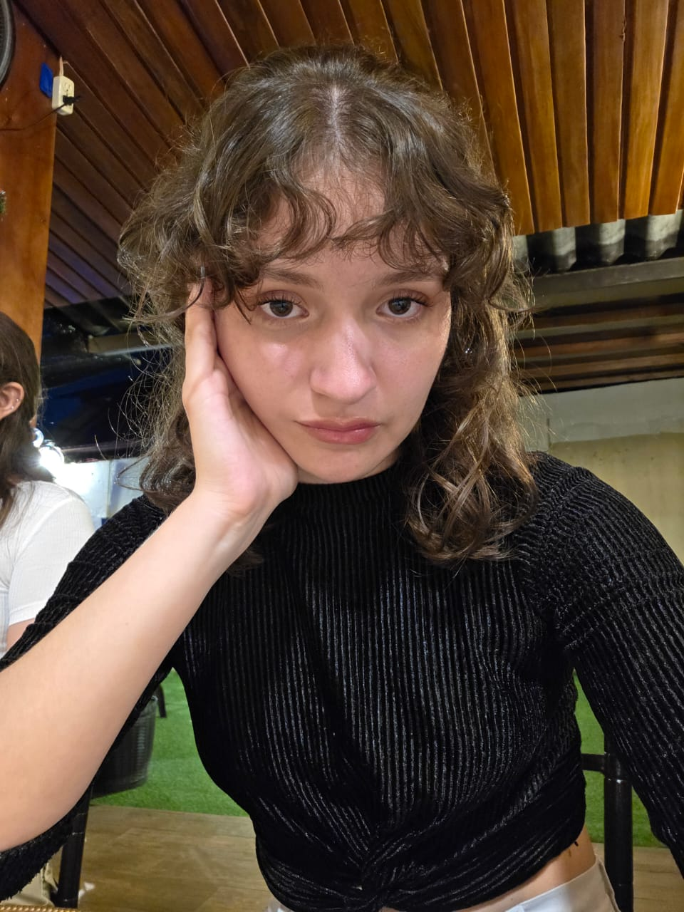
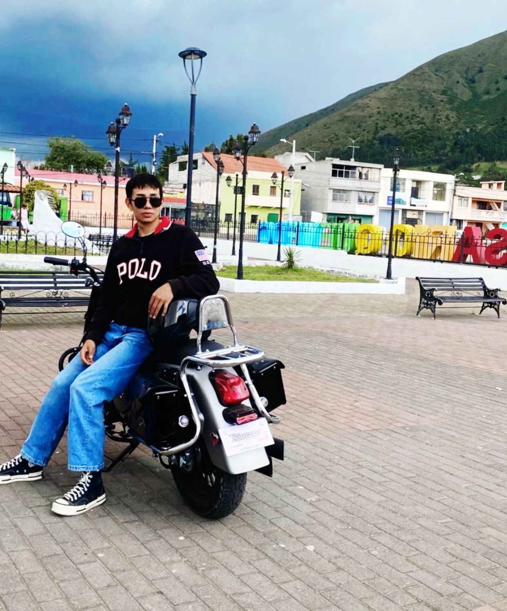
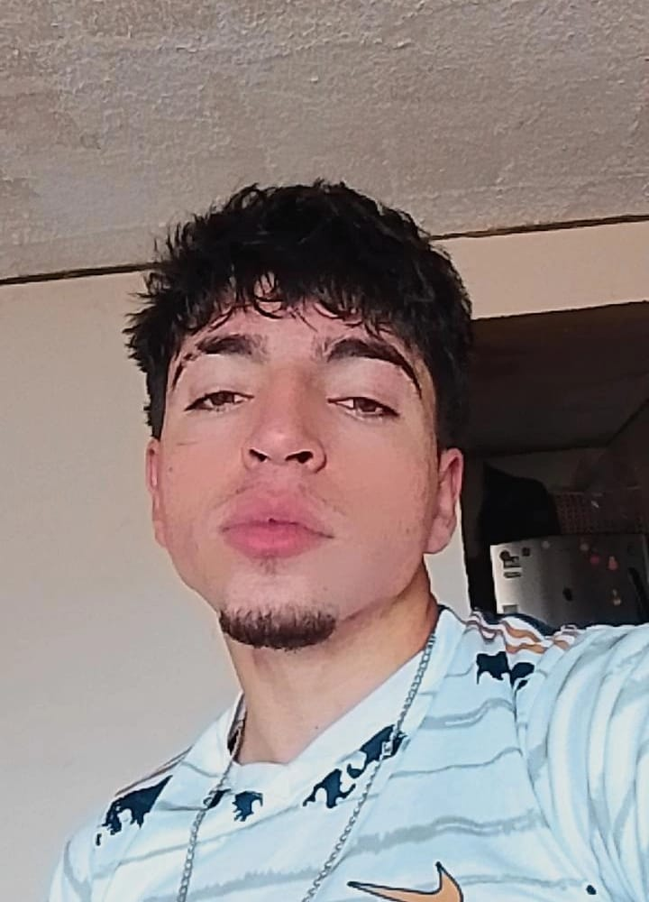
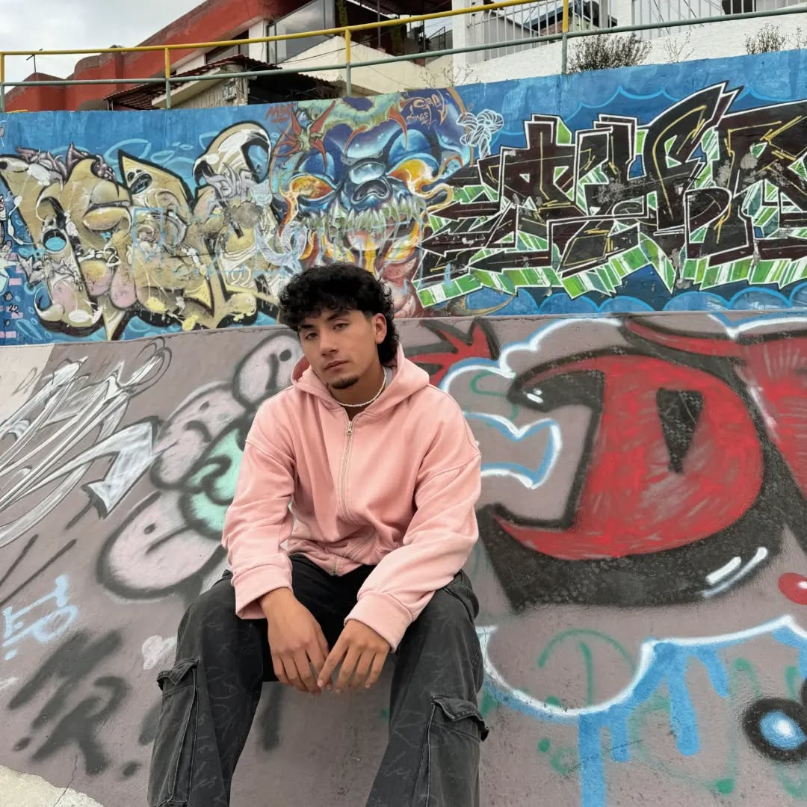

Integrantes

Shantall Aguirre
Rol: Coordinadora de Equipo
Intuitiva, resolutiva y con gran capacidad de adaptación.
Ver más

Korayma Pico
Rol: Diseñadora de moda y a veces del Software
Diseñadora con ojo clínico para el detalle visual.
Ver más
Sandro Fernández
Rol: Guardián Oficial del SELECT y Protector del WHERE
Esclavo de la nostalgia, responsable por convicción, competitivo por naturaleza; gasolina y básquet en las venas, rock en el alma.
Ver más
Alan Peñaloza
Rol: viva la joda
Working On Me. Soy una persona agradable , amante a programar y al futbol .
Ver más
Enrique Zambrano
Rol: Desarrollador Full-Stack en formación
Los únicos vicios que tengo son la pelota de fútbol, el Barcelona, las damas y programar hasta que el codigo me pida descanso.
Ver más